건축기사 (2019-03-03 기출문제)
1과목: 건축계획
1. 사무소 건축의 실단위 계획 중 개방식 배치에 관한 설명으로 옳지 않은 것은?
- 공사비를 줄일 수 있다.
- 실의 깊이나 길이에 변화를 줄 수 없다.
- 시각차단이 없으므로 독립성이 적어진다.
- 경영자의 입장에서는 전체를 통제하기가 쉽다.
(정답률: 87%)

2. 다음 설명에 알맞은 공장건축의 레이아웃 형식은?
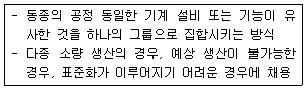
- 고정식 레이아웃
- 혼성식 레이아웃
- 공정중심의 레이아웃
- 제품중심의 레이아웃
(정답률: 87%)
3. 다음 설명에 알맞은 백화점 진열장 배치방법은?
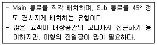
- 직각배치
- 방사배치
- 사행배치
- 자유유선배치
(정답률: 84%)
4. 로마시대의 것으로 그리스의 아고라(Agora)와 유사한 기능을 갖는 것은?
- 포럼(Forum)
- 인슐라(Insula)
- 도무스(Domus)
- 판테온(Pantheon)
(정답률: 79%)
5. 숑바르 드 로우(Chombard de Lawve)가 제시하는 1인당 주거 면적의 병리기준은?
- 6m2
- 8m2
- 10m2
- 12m2
(정답률: 87%)
6. 극장의 평면방식 중 관객이 연기자를 사면에서 둘러싸고 관람하는 형식으로 가장 많은 관객을 수용할 수 있는 형식은?
- 아레나(arena)형
- 가변형(adaptable stage)
- 프로시니엄(proscenium)형
- 오픈스테이지(open stage)형
(정답률: 88%)
7. POE(Post-Occupancy Evaluation)의 의미로 가장 알맞은 것은?
- 건축물 사용자를 찾는 것이다.
- 건축물을 사용해 본 후에 평가하는 것이다.
- 건축물의 사용을 염두에 두고 계획하는 것이다.
- 건축물 모형을 만들어 설계의 적정성을 평가하는 것이다.
(정답률: 81%)
8. 학교 운영방식에 관한 설명으로 옳지 않은 것은?
- 교과교실형은 교실의 순수율은 높으나 학생의 이동이 심하다.
- 종합교실형은 학생의 이동이 없고 초등학교 저학년에 적합하다.
- 일반교실, 특별교실형은 각 학급마다 일반교실을 하나씩 배당하고 그 외에 특별교실을 갖는다.
- 플래툰(platoon) 형은 학급과 학년을 없애고 학생들은 각자의 능력에 따라서 교과를 선택하는 방식이다.
(정답률: 83%)
9. 이슬람교의 영향을 받은 건축물에서 볼 수 있는 연속적인 기하학적 문양, 식물문양, 당초문양 등을 이르는 용어는?
- 스퀸치
- 펜던티브
- 모자이크
- 아라베스크
(정답률: 73%)
10. 공포형식 중 다포식에 관한 설명으로 옳지 않은 것은?
- 다포식 건축물로는 서울 숭례문(남대문) 등이 있다.
- 기둥 상부 이외에 기둥 사이에도 공포를 배열한 형식이다.
- 규모가 커지면서 내부출목보다는 외부출목이 점차 많아졌다.
- 주심포식에 비해서 지붕하중을 등분포로 전달 할 수 있는 합리적인 구조법이다.
(정답률: 67%)
11. 공동주택을 건설하는 주택단지는 기간도로와 접하거나 기간도로로부터 당해 단지에 이르는 진입도로가 있어야 한다. 주택단지의 총세대수가 400세대인 경우 기간도로와 접하는 폭 또는 진입도로의 폭은 최소 얼마 이상이어야 하는가? (단, 진입도로가 1개이며, 원룸형 주택이 아닌 경우)
- 4m
- 6m
- 8m
- 12m
(정답률: 53%)
12. 한식주택과 양식주택에 관한 설명으로 옳지 않은 것은?
- 양식주택은 입식생활이며, 한식주택은 좌식생활이다.
- 양식주택의 실은 단일용도이며, 한식주택의 실은 혼용도이다.
- 양식주택은 실의 위치별 분화이며, 한식주택은 실의 기능별 분화이다.,
- 양식주택의 가구는 주요한 내용물이며, 한식주택의 가구는 부차적 존재이다.
(정답률: 85%)
13. 사무소 건축의 코어 유형에 관한 설명으로 옳지 않는 것은?
- 중심코어형은 유효율이 높은 계획이 가능하다.
- 양단코어형은 2방향 피난에 이상적이며 방재상 유리하다.
- 편심코어형은 각 층 바닥면적이 소규모인 경우에 적합하다.
- 독립코어형은 구조적으로 가장 바람직한 유형으로, 고층, 초고층 사무소 건축에 주로 사용된다.
(정답률: 87%)
14. 도서관의 출납시스템 중 열람자는 직접 서가에 면하여 책의 체제나 표지 정도는 볼 수 있으나 내용을 보려면 관원에게 요구하여 대출 기록을 남긴 후 열람하는 형식은?
- 폐가식
- 반개가식
- 안전개가식
- 자유개가식
(정답률: 79%)
15. 아파트에 의무적으로 설치하여야 하는 장애인ㆍ노인ㆍ임산부 등의 편의시설에 속하지 않는 것은?
- 점자블록
- 장애인전용 주차주역
- 높이 차이가 제거된 건축물 출입구
- 장애인 등의 통행이 가능한 접근로
(정답률: 82%)
16. 백화점의 에스컬레이터 배치에 관한 설명으로 옳지 않은 것은?
- 교차식 배치는 점유면적이 작다.
- 직렬식 배치는 점유면적이 크나 승객의 시야가 좋다.
- 병렬식 배치는 백화점 매장 내부에 대한 시계가 양호하다.
- 병렬 연속식 배치는 연속적으로 승강할 수 없다는 단점이 있다.
(정답률: 81%)
17. 미술관의 전시 기법 중 전시평면이 동일한 공간으로 연속되어 배치되는 전시기법으로 동일 종류의 전시물을 반복 전시할 경우에 유리한 방식은?
- 디오라마 전시
- 파노라마 전시
- 하모니카 전시
- 아일랜드 전시
(정답률: 71%)
18. 페리(C.A, Perry)의 근린주구(Neighborhood Unit) 이론의 내용으로 옳지 않은 것은?
- 초등학교 학구를 기본단위로 한다.
- 중학교와 의료시설을 반드시 갖추어야 한다.
- 지구 내 가로망은 통과교통에 사용되지 않도록 한다.
- 주민에게 적절한 서비스를 제공하는 1~2개소 이상의 상점가를 주요도로의 결절점에 배치한다.
(정답률: 79%)
19. 종합병원 건축계획에 관한 설명으로 옳지 않은 것은?
- 간호사 대기실은 각 간호단위 또는 층별, 동별로 설치한다.
- 수술실의 바닥마감은 전기도체성 마감을 사용하는 것이 좋다.
- 병실의 창문은 환자가 병상에서 외부를 전망할 수 있게 하는 것이 좋다.
- 우리나라의 일반적인 외래진료방식은 오픈 시스템이며 대규모의 각종 과를 필요로 한다.
(정답률: 87%)
20. 극장의 무대에 관한 설명으로 옳지 않은 것은?
- 프로시니엄 아치는 일반적으로 장방형이며, 종횡의 비율은 황금비가 많다.
- 프로시니엄 아치의 바로 뒤에는 막이 쳐지는데, 이 막의 위치를 커튼 라인이라고 한다.
- 무대의 폭은 적어도 프로시니엄 아치 폭의 2배, 깊이는 프로시니엄 아치 폭 이상으로 한다.
- 플라이 갤러리는 배경이나 조명기구, 연기자 또는 음향반사판 등을 매달 수 있도록 무대 천장 및에 철골로 설치한 것이다.
(정답률: 71%)
2과목: 건축시공
21. 다음 중 맴브레인 방수공사에 해당되지 않는 것은?
- 아스팔트방수공사
- 실링방수공사
- 시트방수공사
- 도막방수공사
(정답률: 68%)
22. 용접결합에 관한 설명으로 옳지 않은 것은?
- 슬래그함입-용융금속이 급속하게 냉각되면 슬래그의 일부분이 달아나지 못하고 용착금속내에 혼입되는 것
- 오버랩-용접금속과 모제가 융합되지 않고 겹쳐지는 것
- 블로우 홀-용융금속이 응고할 때 방출되어야 할 가스가 잔류한 것
- 크레이터-용접전류가 과소하여 발생
(정답률: 69%)
23. 사질 지반 굴착 시 벽체 배면의 토사가 흙막이 틈새 또는 구멍으로 누수가 되어 흙막이벽 배면에 공극이 발생하여 물의 흐름이 점차로 커져 결국에는 주변 지반을 함몰시키는 현상은?
- 보일링 현상
- 히빙 현상
- 액상화 현상
- 파이핑 현상
(정답률: 70%)
24. 방수공사에 관한 설명으로 옳은 것은?
- 보통 수압이 적고 얕은 지하실에는 바깥방수법, 수압이 크고 깊은 지하실에는 안방수법이 유리하다.
- 지하실에 안방수법을 채택하는 경우, 지하실 내부에 설치하는 칸막이벽, 창문틀 등은 방수층 시공 전 먼저 시공 하는 것이 유리하다.
- 바깥방수법은 안방수법에 비하여 하자보수가 곤란하다.
- 바깥방수법은 보호 누름이 필요하지만, 안방수법은 없어도 무방하다.
(정답률: 61%)
25. 건축공사에서 공사원가를 구성하는 직접공사비에 포함되는 항목을 옳게 나열한 것은?
- 자재비, 노무비, 이윤, 일반관리비
- 자재비, 노무비, 이윤, 경비
- 자재비, 노무비, 외주비, 경비
- 자재비, 노무비, 외주비, 일반관리비
(정답률: 76%)
26. 무지보공 거푸집에 관한 설명으로 옳지 않은 것은?
- 하부공간을 넓게 하여 작업공간으로 활용할 수 있다.
- 슬래브(slab) 동바리의 감소 또는 생략이 가능하다.
- 트러스 형태의 빔(beam)을 보거푸집 또는 벽체 거푸집에 걸쳐 놓고 바닥판 거푸집을 시공한다.
- 층고가 높을 경우 작용이 불리하다.
(정답률: 65%)
27. 그림과 같은 네트워크 공정표에서 주공정선(Critical path)은?
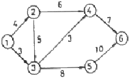
- ①→③→⑤→⑥
- ①→②→④→⑥
- ①→②→③→④→⑥
- ①→②→③→⑤→⑥
(정답률: 75%)
28. 다음 중 공사감리업무와 가장 거리가 먼 항목은?
- 설계도서의 적정성 검토
- 시공상의 안전관리지도
- 공사 실행예산의 편성
- 사용자재와 설계도서와의 일치여부 검토
(정답률: 82%)
29. QC(Quality Control) 활동의 도구가 아닌 것은?
- 기능 계통도
- 산점도
- 히스토그램
- 특성요인도
(정답률: 79%)
30. 지반조사 시 실시하는 평판재하시험에 관한 설명으로 옳지 않은 것은?
- 시험은 예정 기초면보다 높은 위치에서 실시해야 하기 때문에 일부 성토작업이 필요하다.
- 시험재하판은 실제 구조물의 기초면적에 비해 매우 작으므로 재하판 크기의 영향 즉, 스케일 이펙트(scale effect)를 고려한다.
- 하중시험용 재하판은 정방형 또는 원형의 판을 사용한다.
- 침하량을 측정하기 위해 다이얼게이지 지지대를 고정하고 좌우측에 2개의 다이얼게이지 설치한다.
(정답률: 71%)
31. 철근콘크리트 슬래브와 철골보가 일체로 되는 합성구조에 관한 설명으로 옳지 않은 것은?
- 쉐어커넥터가 필요하다.
- 바닥판의 강성을 증가시키는 효과가 크다.
- 자재를 절감하므로 경제적이다.
- 경간이 작은 경우에 주로 적용한다.
(정답률: 63%)
32. 돌로마이트 플라스터 바름에 관한 설명으로 옳지 않은 것은?
- 실내온도가 5℃ 이하일 때는 공사를 중단하거나 난방하여 5℃ 이상으로 유지한다.
- 정벌바름용 반죽은 물과 혼합한 후 4시간 정도 지난 다음 사용하는 것이 바람직하다.
- 초벌바름에 균열이 없을 때에는 고름질한 후 7일 이상 두어 고름질면의 건조를 기다린 후 균열이 발생하지 아니함을 확인한 다음 재벌바름을 실시한다.
- 재벌바름이 지나치게 건조한 때는 적당히 물을 뿌리고 정벌바름한다.
(정답률: 69%)
33. 수밀콘크리트에 관한 설명으로 옳지 않은 것은?
- 콘크리트의 소요 슬럼프는 되도록 작게 하여 180mm를 넘지 않도록 한다.
- 콘크리트의 워커빌리티를 개선시키기 위해 공기연행제, 공기연행감수제 또는 고성능 공기연행감수제를 사용하는 경우라도 공기량은 2%이하가 되게 한다.
- 물결합재비는 50% 이하를 표준으로 한다.
- 콘크리트 타설시 다짐을 충분히 하여, 가급적 이어붓기를 하지 않아야 한다.
(정답률: 53%)
34. 건설공사의 일반적인 특징으로 옳은 것은?
- 공사비, 공사기일 등의 제약을 받지 않는다.
- 주로 도급식 또는 직영식으로 이루어진다.
- 육제노동이 주가 되므로 대량생산이 가능하다.
- 건설 생산물의 품질이 일정하다.
(정답률: 77%)
35. 건축공사에서 활용되는 견적방법 중 가장 상세한 공사비의 산출이 가능한 견적방법은?
- 명세견적
- 개산견적
- 입찰견적
- 실행견적
(정답률: 79%)
36. 건설현장에서 굳지 않은 콘크리트에 대해 실시하는 시험으로 옳지 않은 것은?
- 슬럼프(slump) 시험
- 코어(core) 시험
- 염화물 시험
- 공기량 시험
(정답률: 73%)
37. 도장 공사 시 주의사항으로 옳지 않은 것은?
- 바탕의 건조가 불충분하거나 공기의 습도가 높을 때에는 시공하지 않는다.
- 불투명한 도장일 때에는 초벌부터 정벌까지 같은 색으로 시공해야 한다.
- 야간에는 색을 잘못 도장할 염려가 있으므로 시공하지 않는다.
- 직사광선은 가급적 피하고 도막이 손상될 우려가 있을 때에는 도장하지 않는다.
(정답률: 88%)
38. 철근콘크리트 공사 중 거푸집이 벌어지지 않게 하는 긴장재는?
- 세퍼레이터(Separator)
- 스페이서(Spacer)
- 폼 타이(Fom tie)
- 인서트(Insert)
(정답률: 76%)
39. 목공사에 사용되는 철물에 관한 설명으로 옳지 않은 것은?
- 감잡이쇠는 큰 보에 걸쳐 작은 보를 받게 하고, 안장쇠는 평보를 대공에 달아매는 경우 또는 평보와 ㅅ자보의 밑에 쓰인다.
- 못의 길이는 박아대는 재두께의 2.5배 이상이며, 마구리 등에 박는 것은 3.0배 이상으로 한다.
- 볼트 구멍은 볼트지름보다 3mm 이상 커서는 안된다.
- 듀벨은 볼트와 같이 사용하여 듀벨에는 전단력, 볼트에는 인장력을 분담시킨다.
(정답률: 58%)
40. 합성수지에 관한 설명으로 옳지 않은 것은?
- 에폭시 수지는 접착제, 프린트 배선판 등에 사용된다.
- 염화비닐수지는 내후성이 있고, 수도관 등에 사용된다.
- 아크릴 수지는 내약품성이 있고, 조명기구커버 등에 사용된다.
- 페놀수지는 알칼리에 매우 강하고, 천장 채광판 등에 주로 사용된다.
(정답률: 60%)
3과목: 건축구조
41. 철골구조에 관한 설명으로 옳지 않은 것은?
- 수평하중에 의한 접합부의 연성능력이 낮다.
- 철근콘크리트조에 비하여 넓은 전용면적을 얻을 수 있다.
- 정밀한 시공을 요한다.
- 장스팬 구조물에 적합하다.
(정답률: 64%)
42. 강도설계법에서 D22 압축이형철근의 기본정착길이 ldb는? (단, 경량콘크리트 계수 λ= 1.0, fck=27MPa, fy=400MPa)
- 200.5mm
- 378.4mm
- 423.4mm
- 604.6mm
(정답률: 63%)
43. 등분포하중을 받는 그림과 같은 3회전단아치에서 C점의 전단력을 구하면?
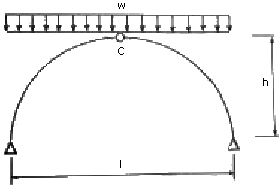
- 0
- wl/2
- wh/4
- wl/8
(정답률: 68%)
44. 다음 그림과 같이 수평하중 30kN이 작용하는 라멘구조에서 E점에서의 휨모멘트 값(절대값)은?
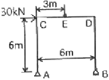
- 40kNㆍm
- 45kNㆍm
- 60kNㆍm
- 90kNㆍm
(정답률: 55%)
45. 다음 그림과 같은 H형강(H-440×300×10×20)단면의 전소성모멘트(Mp)는 얼마인가? (단, Fy=400MPa)
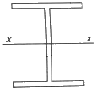
- 963kNㆍm
- 1168kNㆍm
- 1368kNㆍm
- 1568kNㆍm
(정답률: 49%)
46. 다음 그림과 같은 중공형 단면에 대한 단면2차반경 rx는?
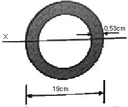
- 3.21cm
- 4.62cm
- 6.53cm
- 7.34cm
(정답률: 48%)
47. 부하면적 36m2인 콘크리트 기둥의 영향면적에 따른 활하중저감계수(C)로 옳은 것은? (단,
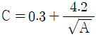
, A는 영향면적)- 0.25
- 0.45
- 0.65
- 1
(정답률: 53%)
48. 그림과 같은 구조물의 부정정차수는?
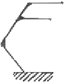
- 불안정
- 1차 부정정
- 3차 부정정
- 정정
(정답률: 71%)
49. 양단 힌지인 길이 6m의 H-300×300×10×15의 기둥이 약축방향으로 부재중앙이 가새로 지지되어 있을 때 이 부재의 세장비는? (단 단면2차반경 γx=13.1cm, γy=7.51cm)
- 40.0
- 45.8
- 58.2
- 66.3
(정답률: 62%)
50. 각 지반의 허용지내력의 크기가 큰 것부터 순서대로 올바르게 나열된 것은?
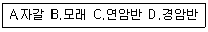
- B＞A＞C＞D
- A＞B＞C＞D
- D＞C＞A＞B
- D＞C＞B＞A
(정답률: 78%)
51. 연약지반에서 부동침하를 줄이기 위한 가장 효과적인 기초의 종류는?
- 독립기초
- 복합기초
- 연속기초
- 온통기초
(정답률: 70%)
52. 다음 그림과 같이 단면의 크기가 500mm×500mm인 띠철근 기둥이 저할할 수 있는 최대 설계축하중 øPn은? (단, fy=400Mpa, fck=27MPa)
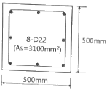
- 3591kN
- 3972kN
- 4170kN
- 4275kN
(정답률: 51%)
53. 아래 그림과 같은 단순보의 중앙점에서 보의 최대 처짐은? (단. 부재의 EI는 일정하다.)
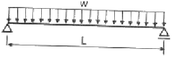
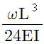
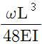
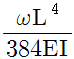
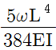
(정답률: 67%)
54. 그림과 같은 하중을 받는 단순보에서 단면에 생기는 최대 휨응력도는? (단, 목재는 결함이 없는 균질한 단면이다.)
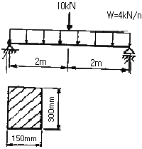
- 8MPa
- 10MPa
- 12MPa
- 15MPa
(정답률: 42%)
55. 독립기초(자중포함)가 축방향력 650kN, 휨모멘트 130kNㆍm를 받을 때 기초 저면의 편심거리는?
- 0.2m
- 0.3m
- 0.4m
- 0.6m
(정답률: 50%)
56. 보의 유효깊이 d=550mm, 보의 폭 bw=300mm인 보에서 스터럽이 부담할 전단력 Vs=200kN일 경우, 수직 스터럽의 간격으로 가장 타당한 것은? (단, Aν=142mm2, fyt=400MPa, fck=24MPa)
- 120mm
- 150mm
- 180mm
- 200mm
(정답률: 54%)
57. 다음 그림의 모살용접부의 유효목두께는?
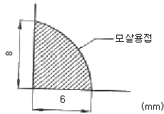
- 4.0mm
- 4.2mm
- 4.8mm
- 5.6mm
(정답률: 70%)
58. 지진하중 설계 시 밑면 전단력과 관계없는 것은?
- 유효 건물 중량
- 중요도계수
- 지반증폭계수
- 가스트계수
(정답률: 76%)
59. 그림과 같은 연속보에 있어 절점 B의 회전을 저지시키기 위해 필요한 모멘트의 절대값은?
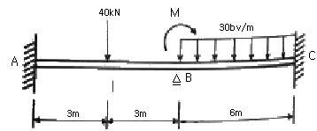
- 30kNㆍm
- 60kNㆍm
- 90kNㆍm
- 120kNㆍm
(정답률: 45%)
60. 철근콘크리트구조물의 내구성 설계에 관한 설명으로 옳지 않은 것은?
- 설계기준 강도가 35MPa을 초과하는 콘크리트는 동해저항 콘크리트에 대한 전체 공기량 기준에서 1% 감소시킬 수 있다.
- 동해저항 콘크리트에 대한 전체 공기량 기준에서 굵은 골재의 최대치수가 25mm인 경우 심한노출에서의 공기량 기준은 6.0%이다.
- 바닷물에 노출된 콘크리트의 철근부식방지를 위한 보통골재콘크리트의 최대 물결합재비는 40%이다.
- 철근의 부식방지를 위하여 굳지 않은 콘크리트의 전체 염소이온양은 원칙적으로 0.9kg/m3 이하로 하여야 한다.
(정답률: 62%)
4과목: 건축설비
61. 간접조명기구에 관한 설명으로 옳지 않은 것은?
- 직사 눈부심이 없다.
- 매우 넓은 면적이 광원으로서의 역할을 한다.
- 일반적으로 발산광속 중 상향광속이 90~100[%] 정도이다.
- 천장, 벽면 등은 빛이 잘 흡수되는 색과 재료를 사용하여야 한다.
(정답률: 65%)
62. 음의 대소를 나타내는 감각향을 음의 크기라고 하는데, 음의 크기의 단위는?
- dB
- cd
- Hz
- sone
(정답률: 68%)
63. 전기설비에서 다음과 같이 정의되는 것은?
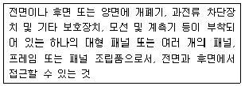
- 캐비닛
- 차단기
- 배전반
- 분전반
(정답률: 66%)
64. 온수난방에 관한 설명으로 옳지 않은 것은?
- 증기난방에 비해 보일러의 취급이 비교적 쉽고 안전하다.
- 동일 방열량인 경우 증기난방보다 관지름을 작게 할 수 있다.
- 증기난방에 비해 난방부하의 변동에 따른 온도 조절이 용이하다.
- 보일러 정지 후에도 여열이 남아 있어 실내 난방이 어느 정도 지속된다.
(정답률: 70%)
65. 공조시스템의 전열교환기에 관한 설명으로 옳지 않은 것은?
- 공기 대 공기의 열교환기로서 현열만 교환이 가능하다.
- 공조기는 물론 보일러나 냉동기의 용량을 줄일 수 있다.
- 공기방식의 중앙공조시스템이나 공장 등에서 환기에서의 에너지 회수방식으로 사용된다.
- 전열교환기를 사용한 공조시스템에서 중간기(봄, 가을)를 제외한 냉방기와 난방기의 열회수량은 실내ㆍ외의 온도차가 클수록 많다.
(정답률: 66%)
66. 다음 중 수격작용의 발생 원인과 가장 거리가 먼 것은?
- 밸브의 급페쇄
- 감압밸브의 설치
- 배관방법의 불량
- 수도본관의 고수압(高水壓)
(정답률: 79%)
67. 다음 중 그 값이 클수록 안전한 것은?
- 접지저항
- 도체저항
- 접촉저항
- 절연저항
(정답률: 75%)
68. 전기설비가 어느 정도 유효하게 사용되는가를 나타내며, 다음과 같은 식으로 산정되는 것은?
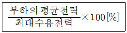
- 역률
- 부등률
- 부하율
- 수용률
(정답률: 77%)
69. 겨울철 주택의 단열 및 결로에 관한 설명으로 옳지 않은 것은?
- 단층 유리보다 복층 유리의 사용이 단열에 유리하다.
- 벽체내부로 수증기 침입을 억제할 경우 내부결로 방지에 효과적이다.
- 단열이 잘 된 벽체에서는 내부결로는 발생하지 않으나 표면결로는 발생하기 쉽다.
- 실내측 벽 표면온도가 실내공기의 노점온도보다 높은 경우 표면결로는 발생하지 않는다.
(정답률: 62%)
70. 통기관의 설치 목적으로 옳지 않은 것은?
- 트랩의 봉수를 보호한다.
- 오수와 잡배수가 서로 혼합되지 않게 한다.
- 배수계통 내의 배수 및 공기의 흐름을 원활히 한다.
- 배수관 내에 환기를 도모하여 관 내를 청결하게 유지한다.
(정답률: 58%)
71. 전압이 1[V]일 때 1[A]의 전류가 1[s] 동안 하는 일을 나타내는 것은?
- 1[Ω]
- 1[J]
- 1[dB]
- 1[W]
(정답률: 71%)
72. 승객 스스로 운전하는 전자동 엘리베이터로 카 버튼이나 승강장의 호출신호로 기동, 정지를 이루는 엘리베이터 조작방식은?
- 승합전자동방식
- 카 스위치 방식
- 시그널 컨트럴 방식
- 레코드 컨트럴 방식
(정답률: 68%)
73. 가로, 세로, 높이가 각각 4.5×4.5×3m인 실의 각 벽면 표면온도가 18℃, 천장면 20℃, 바닥면 30℃일 때 평균복사온도(MRT)는?
- 15.2℃
- 18.0℃
- 21.0℃
- 27.2℃
(정답률: 52%)
74. 냉방부하 계산 결과 현열부하가 620W, 잠열부하가 155W일 경우, 현열비는?
- 0.2
- 0.25
- 0.4
- 0.8
(정답률: 63%)
75. 간접가열식 급탕설비에 관한 설명으로 옳지 않은 것은?
- 대규모 급탕설비에 적당하다.
- 비교적 안정된 급탕을 할 수 있다.
- 보일러 내면에 스케일이 많이 생긴다.
- 가열 보일러는 난방용 보일러와 겸용할 수 있다.
(정답률: 70%)
76. 수관식 보일러에 관한 설명으로 옳지 않은 것은?
- 사용압력이 연관식보다 낮다.
- 설치면적이 연관식보다 넓다.
- 부하변동에 대한 추종성이 높다.
- 대형건물과 같이 고압증기를 다량 사용하는 곳이나 지역난방 등에 사용된다.
(정답률: 45%)
77. 고속덕트에 관한 설명으로 옳지 않은 것은?
- 원형덕트의 사용이 불가능하다.
- 동일한 풍량을 송풍할 경우 저속덕트에 비해 송풍기 동력이 많이 든다.
- 공장이나 창고 등과 같이 소음이 별로 문제가 되지 않는 곳에 사용된다.
- 동일한 풍량을 송풍할 경우 저속덕트에 비해 덕트의 단면치수가 작아도 된다.
(정답률: 66%)
78. 수도직결방식의 급수방식에서 수도 본관으로부터 8m 높이에 위치한 기구의 소요압이 70kPa이고 배관의 마찰손실이 20kPa인 경우 이 기구에 급수하기 위해 필요한 수도본관의 최소 압력은?
- 약 90kPa
- 약 98kPa
- 약 170kPa
- 약 210kPa
(정답률: 47%)
79. 도시가스에서 중압의 가스압력은? (단, 액화가스가 기화되고 다른 물질과 혼합되지 아니한 경우 제외)
- 0.⑤MPa 이상, 0.1MPa 미만
- 0.01MPa 이상, 0.1MPa 미만
- 0.1MPa 이상, 1MPa 미만
- 1MPa 이상, 10MPa 미만
(정답률: 68%)
80. 스프링클러설비 설치장소가 아파트인 경우, 스프링클러헤드의 기준개수는? (단, 폐쇄형 스프링클러헤드를 사용하는 경우)
- 10개
- 20개
- 30개
- 40개
(정답률: 67%)
5과목: 건축법규
81. 다음과 같은 경우 연면적 1000m2인 건축물의 대지에 확보하여야 하는 전기설비 설치공간의 면적기준은?
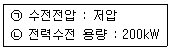
- 가로 2.5m, 세로 2.8m
- 가로 2.5m, 세로 4.6m
- 가로 2.8m, 세로 2.8m
- 가로 2.8m, 세로 4.6m
(정답률: 39%)
82. 건축법 제61조 제2항에 따른 높이를 산정할 때, 공동주택을 다른 용도와 복합하여 건축하는 경우 건축물의 높이 산정을 위한 지표면 기준은?
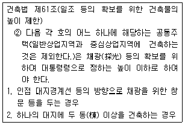
- 전면도로의 중심선
- 인접 대지의 지표면
- 공동주택의 가장 낮은 부분
- 다른 용도의 가장 낮은 부분
(정답률: 50%)
83. 국토의 계획 및 이용에 관한 법령에 따른 도시ㆍ군관리계획의 내용에 속하지 않는 것은?
- 광역계획권의 장기발전방향에 관한 계획
- 도시개발사업이나 정비사업에 관한 계획
- 기반시설의 설치ㆍ정비 또는 개량에 관한 계획
- 용도지역ㆍ용도지구의 지정 또는 변경에 관한 계획
(정답률: 71%)
84. 다음 중 노외주차장의 출구 및 입구를 설치할 수 있는 장소는?
- 육교로부터 4m 거리에 있는 도로의 부분
- 지하횡단보도에서 10m 거리에 있는 도로의 부분
- 초등학교 출입구로부터 15m 거리에 있는 도로의 부분
- 장애인 복지시설 출입구로부터 15m 거리에 있는 도로의 부분
(정답률: 60%)
85. 건축물에 설치하는 지하층의 구조 및 설비에 관한 기준 내용으로 옳지 않은 것은?
- 거실의 바닥면적의 합계가 1000m2 이상인 층에는 환기설비를 설치할 것
- 거실의 바닥면적이 30m2 이상인 층에는 피난층으로 통하는 비상탈출구를 설치할 것
- 지하층의 바닥면적이 300m2 이상인 층에는 식수 공급을 위한 급수전을 1개소 이상 설치할 것
- 문화 및 집회시설 중 공연장의 용도에 쓰이는 층으로서 그 층의 거실의 바닥면적의 합계가 50m2 이상인 건축물에는 직통계단을 2개소 이상 설치할 것
(정답률: 55%)
86. 주차장의 수급 실태조사에 관한 설명으로 옳지 않은 것은?
- 실태조사의 주기는 5년으로 한다.
- 조사구역은 사각형 또는 삼각형 형태로 설정한다.
- 조사구역 바깥 경계선의 최대거리가 300m를 넘지 않도록 한다.
- 각 조사구역은 「건축법」에 따른 도로를 경계로 구분한다.
(정답률: 63%)
87. 다음 중 건축법이 적용되는 건축물은?
- 역사(驛舍)
- 고속도로 통행료 징수시설
- 철도의 선로 부지에 있는 플랫폼
- 「문화재보호법」에 따른 가지정(假指定)문화재
(정답률: 70%)
88. 다음 중 아파트를 건축할 수 없는 용도지역은?
- 준주거지역
- 제1종 일반주거지역
- 제2종 일반주거지역
- 제3종 일반주거지역
(정답률: 78%)
89. 다음은 공동주택의 환기설비에 관한 기준 내용이다. ()안에 알맞은 것은?(관련 규정 개정전 문제로 여기서는 기존 정답인 1번을 누르면 정답 처리됩니다. 자세한 내용은 해설을 참고하세요.)
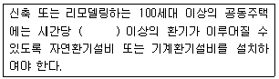
- 0.5회
- 1회
- 1.5회
- 2회
(정답률: 70%)
90. 다음 중 부설주차장 설치대상 시설물의 종류와 설치기준의 연결이 옳지 않은 것은?
- 골프장-1홀당 10대
- 숙박시설-시설면적 200m2당 1대
- 위락시설-시설면적 150m2당 1대
- 문화 및 집회시설 중 관람장-정원 100명당 1대
(정답률: 68%)
91. 국토의 계획 및 이용에 관한 법률상 다음과 같이 정의되는 것은?
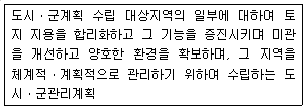
- 광역도시계획
- 지구단위계획
- 도시ㆍ군기본계획
- 입지규제최소구역계획
(정답률: 71%)
92. 다음 중 건축에 속하지 않는 것은?
- 이전
- 증축
- 개축
- 대수선
(정답률: 66%)
93. 건축물의 내부에 설치하는 피난계단의 구조에 관한 기준 내용으로 옳지 않은 것은?
- 계단의 유효너비는 0.9m 이상으로 할 것
- 계단실의 실내에 접하는 부분의 마감은 불연재료로 할 것
- 계단은 내화구조로 하고 피난층 또는 지상까지 직접 연결되도록 할 것
- 건축물의 내부에서 계단실로 통하는 출입구의 유효너비는 0.9m 이상으로 할 것
(정답률: 56%)
94. 그림과 같은 대지의 도로 모퉁이 부분의 건축선으로서 도로 경계선의 교차점에서의 거리 “A”로 옳은 것은?
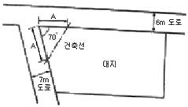
- 1m
- 2m
- 3m
- 4m
(정답률: 59%)
95. 다음 중 허가대상에 속하는 용도변경은?
- 숙박시설에서 의료시설로의 용도변경
- 판매시설에서 문화 및 집회시설로의 용도변경
- 제1종 근린생활시설에서 업무시설로의 용도변경
- 제1종 근린생활시설에서 공동주택으로의 용도변경
(정답률: 51%)
96. 전용주거지역 또는 일반주거지역 안에서 높이 8m 2층 건축물을 건축하는 경우, 건축물의 각 부분은 일조 등의 확보를 위하여 정북방향으로의 인접대지경계선으로부터 최소 얼마 이상 띄어 건축하여야 하는가?
- 1m
- 1.5m
- 2m
- 3m
(정답률: 71%)
97. 다음 중 건축물의 대지에 공개공지 또는 공개공간을 확보하여야 하는 대상 건축물에 속하는 것은? (단, 일반주거지역의 경우)
- 업무시설로서 해당 용도로 쓰는 바닥면적의 합계가 3000m2인 건축물
- 숙박시설로서 해당 용도로 쓰는 바닥면적의 합계가 4000m2인 건축물
- 종교시설로서 해당 용도로 쓰는 바닥면적의 합계가 5000m2인 건축물
- 문화 및 집회시설로서 해당 용도로 쓰는 바닥면적의 합계가 4000m2인 건축물
(정답률: 56%)
98. 다음 설명에 알맞은 용도지구의 세분은?
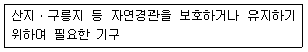
- 자연경관지구
- 자연방재지구
- 특화경관지구
- 생태계보호지구
(정답률: 69%)
99. 한 방에서 층의 높이가 다른 부분이 있는 경우 충고 산정방법으로 옳은 것은?
- 가장 낮은 높이로 한다.
- 가장 높은 높이로 한다.
- 각 부분 높이에 따른 면적에 따라 가중평균 한 높이로 한다.
- 가장 낮은 높이와 가장 높은 높이의 산술평균 한 높이로 한다.
(정답률: 65%)
100. 다음의 대규모 건축물의 방화벽에 관한 기준 내용 중 ()안에 공통으로 들어갈 내용은?
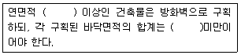
- 500m2
- 1000m2
- 1500m2
- 3000m2
(정답률: 61%)